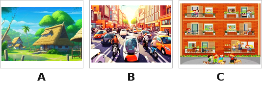
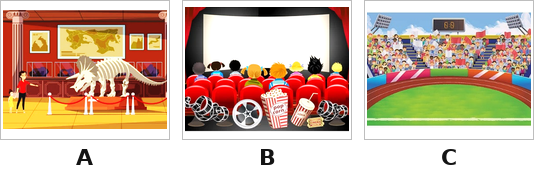
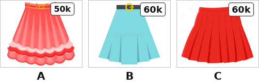
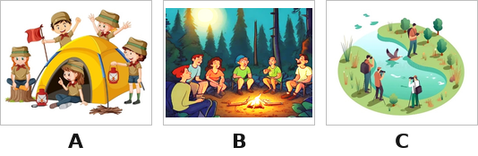
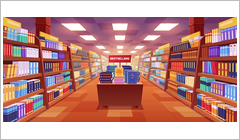
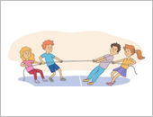

Thời gian: 35 phút. Còn 10 phút hệ thống nhắc; hết giờ có thêm 5 phút gia hạn rồi tự động nộp.
Bài làm ở chế độ toàn màn hình. Chuyển tab, mất focus, thoát toàn màn hình đều bị ghi nhận và báo cho giáo viên.
Không dùng chuột phải, sao chép/dán, phím tắt. Đáp án và giải thích chi tiết hiển thị sau khi nộp bài.
Đã nghe: 0/3 lần. Số lần nghe tối đa: 3.
Question 1. Listen and tick A, B or C (nghe và chọn tranh đúng).
1

Nghe và chọn tranh đúng.
2

Nghe và chọn tranh đúng.
3

Nghe và chọn tranh đúng.
4

Nghe và chọn tranh đúng.
Question 2. Listen and order the dialogue (nghe và đánh số thứ tự các hội thoại).
Ví dụ (0): Where do you live? – I live in Quang Trung Street. (hội thoại số 0). Nghe và điền số thứ tự 1–4 cho các hội thoại còn lại.
5
Nối (chọn đáp án đúng cho từng dòng):
A: What does she look like? – B: She is fat and tall.→
A: Sorry, I want to go to the bakery. It is in Oxford Street. – B: You can turn round.→
A: What does he do? – B: He is a policeman.→
A: What was the weather like last weekend? – B: It was cloudy.→
Question 3. Listen to the passage and complete (nghe đoạn văn và điền từ).
It is a nice day today. The weather is (0) windy and cloudy. In the morning, my family will go to the zoo to see some animals. We all like (1) ______ because they have a long neck and legs. After the zoo, we will go to the (2) ______ in the afternoon. Some of my friends are already there. They’re playing (3) ______. I promise to help my mom with (4) ______ in the evening.
6
Chỗ trống (1):
7
Chỗ trống (2):
8
Chỗ trống (3):
9
Chỗ trống (4):
Question 4. Read and answer the question by choosing A, B or C (chọn câu trả lời đúng).
10
How can I get to the water park?
11
Why do you like peacocks?
12
What does your sister do on Sundays?
Question 5. Fill in each blank with one given word (chọn từ trong khung điền vào chỗ trống).
Ginny and her mother are at a (0) shopping centre. Ginny wants to buy some stationery. They go to the (1) ______. The pen is ten thousand dong. The notebook is fifteen (2) ______ dong. And the school bag is (3) ______ thousand dong. Ginny buys two pens, a notebook, and a school bag. She is very happy with her new school things.

Từ/cụm từ cho sẵn:thousandbookshopninetyshopping
13
Chỗ trống (1):
14
Chỗ trống (2):
15
Chỗ trống (3):
Question 6. Reorder the sentences to make a complete conversation (sắp xếp thành hội thoại: chọn vị trí 2–5 của từng câu; câu “Hello Ben, look at this road sign. What does it say?” đã đứng đầu, là vị trí 1).
1. Hello Ben, look at this road sign. What does it say?
16
Nối (chọn đáp án đúng cho từng dòng):
Oh, ok. How can I get to the food stall, Ben?→
Go straight, turn left, and turn right. The food stall is on the right.→
Thank you, Ben. Have a good day!→
It says “Go straight”, Lucy.→
Question 7. Fill in the blanks with suitable words (nhìn tranh, điền từ phù hợp).
17
I help my mom with the housework .
18
My brother on Saturdays.
19
It’s today.
20

They are playing .
Question 8. Reorder the words to make complete sentences (sắp xếp từ thành câu đúng).
21
Sắp xếp thành câu đúng:
22
Sắp xếp thành câu đúng:
23
Sắp xếp thành câu đúng:
Question 9. Use the given words to make sentences (dùng từ gợi ý viết thành câu hoàn chỉnh).
24
I/ live/ 84 Tran Hung Dao Street →
25
turn left/ turn right/ hospital. →
26
bookshop/ near/ gift shop. →
--:--
Bắt đầu làm bài kiểm tra
Nhập thông tin để hệ thống ghi nhận kết quả.
Nhắc giờ
⏰ Đã hết giờ làm bài
Bạn có thêm 5 phút để hoàn tất. Hết 5 phút bài sẽ tự động nộp.
⚠ Bạn đã thoát toàn màn hình
Hành vi này đã được ghi nhận. Hãy quay lại chế độ toàn màn hình để tiếp tục làm bài.